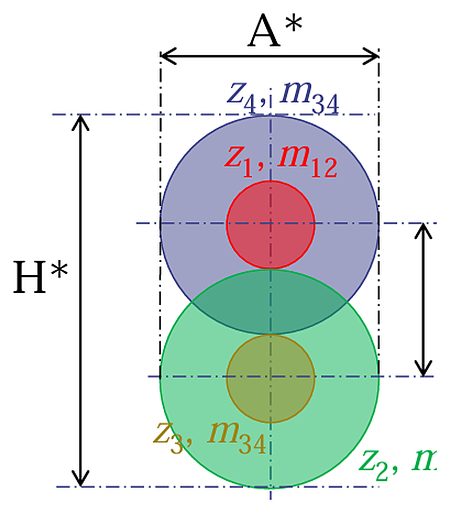
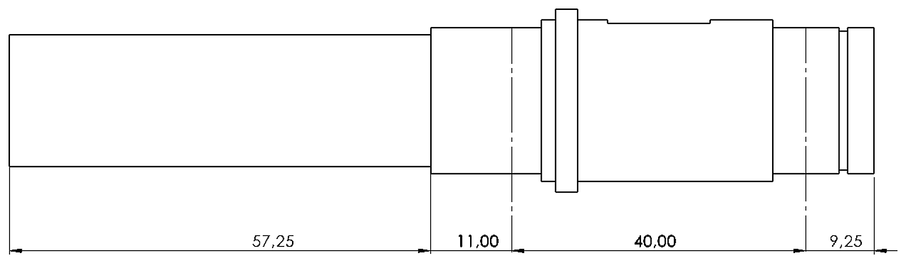
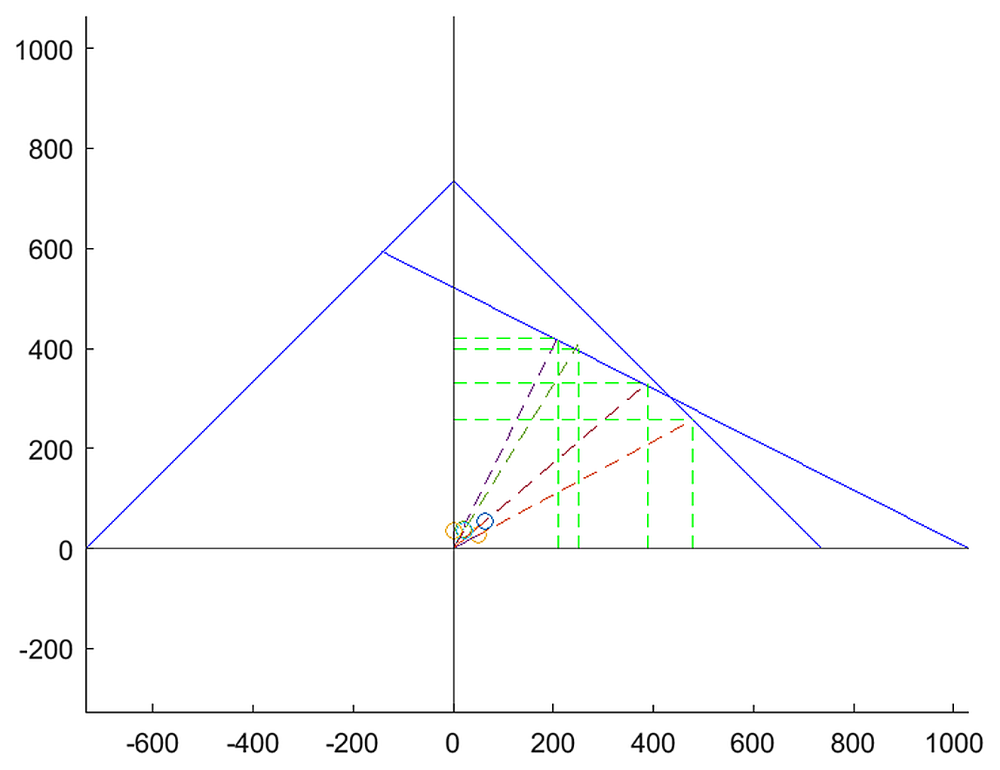
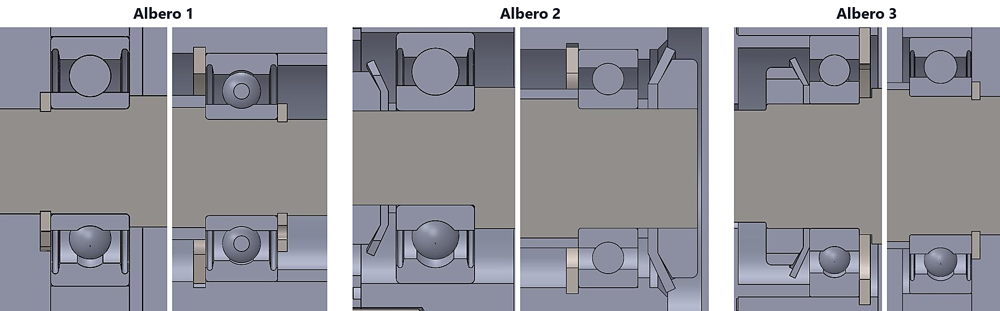

Specifications
The reference is a commercial two-stage coaxial reducer with a nominal ratio of 12.27, 900 rpm input, 62 Nm output and 0.34 kW continuous power. The design had to fit within the envelope of the model, guarantee at least 25,000 hours of bearing life and withstand the radial load from the driven machine on the output shaft.

For the input and output shafts we chose C45 quenched and tempered steel; for the gears and the intermediate shaft, case-hardened 16MnCr5.
Gears
The minimum number of teeth comes from the interference limit, the module from the Lewis formula, for bending, and the Hertz formula, for contact; then the next standard module is chosen. With the final tooth numbers the ratio is 12.49, within 2% of the nominal one, and the coaxiality condition is met to within a few thousandths of a millimetre. We checked the transverse and overlap contact ratios, then static and fatigue strength, for tooth-root bending and pitting, to ISO 6336-1 with all the correction factors.


Shafts
Shaft sizing is iterative: a first design in torsion only, then in combined bending and torsion with the load diagrams, and finally the static check with the Tresca criterion. The intermediate shaft, the most heavily loaded, was also checked for fatigue at the critical sections, with notch, size and surface finish effects and the Haigh diagram. The pinion on the intermediate shaft is machined integrally, because a keyway would have weakened the hub too much.


Bearings, lubrication and keys
We chose deep-groove ball bearings, checked statically and for life. The basic rating life was adjusted with the SKF method, which accounts for lubricant viscosity and contamination. With ISO VG 460 oil, chosen on the most heavily loaded shaft, all bearings exceed the required 25,000 hours. The keys, to UNI 6604, are sized for contact pressure and shear.

Assembly and housing
We defined the assembly sequence of the shafts into the three housing elements and how each bearing is locked: only the axially loaded one is also constrained in the housing, with a flange or circlip, while the other is left free to accommodate thermal expansion. The gears are keyed and held axially between a shoulder and a spacer.

What I learned
This project let me experience mechanical design as it really is: iterative, with choices that affect each other and standards to apply carefully. I learned to move from calculation to drawing, thinking from the start about how the components will be assembled and locked, and to balance strength, envelope and ease of manufacture.